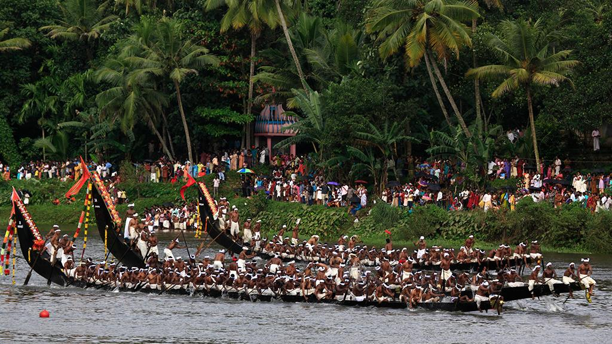

Aranmula Boat Race
അരൻമുള വള്ളംകളി


The Aranmula Boat Race traces its origin to a legend centred on the Aranmula Sree Parthasarathy Temple, dedicated to Krishna in his form as Partha's charioteer. According to the most widely told account, a Brahmin devotee once vowed to supply the provisions for the Thiruvona Sadya, the ceremonial feast offered to the deity during the Thiruvonam asterism, and dispatched these supplies by boat along the Pamba river. When the vessel, known as the Thiruvona Thoni, came under attack from bandits or rival villagers en route, snake boats from the surrounding settlements rushed to escort and defend it. That act of collective rescue is said to have been formalised into an annual ritual procession, which over time grew into the competitive race observed today.
As Kerala's oldest documented organised snake boat race, the Aranmula Vallamkali occupies a distinct place among the state's boat-racing traditions, most of which developed primarily as secular sporting contests. Here the race remains inseparable from temple worship, held each year on the Uthrattathi asterism in the Malayalam month of Chingam, during the closing days of Onam, so that the regatta functions simultaneously as a sporting event and an act of devotion to the temple deity. Some accounts also trace the lineage of the boats themselves to the thirteenth-century kingdom of Chembakassery, whose ruler is said to have commissioned war-canoes for use against the neighbouring principality of Kayamkulam, vessels that were later repurposed for ceremonial and sporting use once hostilities ended.
The race is performed using palliyodams, literally 'temple boats', a distinct class of snake boat reserved for ceremonial service to the Parthasarathy Temple rather than ordinary racing use. Each palliyodam is carved from a single hollowed tree trunk reinforced with wooden planks, built long and narrow with a high, curving stern that can rise to about twenty feet, giving the finished hull the silhouette of a raised serpent's hood, consistent with local belief that the design was revealed by Krishna himself. Depending on the boat, lengths run from roughly 100 to over 130 feet, and each requires more than a hundred oarsmen, along with a helmsman and singers who keep rhythm with traditional vanchipattu boat songs during the procession.
On race day, dozens of palliyodams representing villages along the Pamba, typically numbering around thirty to forty, assemble for a formal procession to the temple before competing on the river, their crews coordinating through chanted boat songs and percussion that have themselves become an associated performing art form. A related and distinctive feature of the Aranmula tradition is the Vallasadya, an elaborate communal feast offered to the participating boat crews at the temple, in which, in some notable years, the number of palliyodams honoured with the feast has reportedly exceeded fifty, reflecting the scale the custom can reach beyond the race itself.
The event today is coordinated with the local temple administration and the Kerala Tourism department, which lists it among the state's officially recognised boat race festivals and promotes it as part of the broader Onam tourism calendar alongside races such as the Nehru Trophy Boat Race at Alappuzha. The palliyodams themselves are maintained year-round by the villages and boat clubs that own them, with repairs and repainting typically carried out in the months before the race. Unlike many of Kerala's other snake boat events, the Aranmula race is run without prize money as its central draw, its participants competing chiefly to fulfil a ritual obligation to the temple rather than for sporting reward.
| Date of Introduction | October 31, 1992 |
|---|---|
| Address | Sub Postmaster, |
| Aranmula SO, | |
| Pathanamthitta (dt.), Kerala - 689533. |